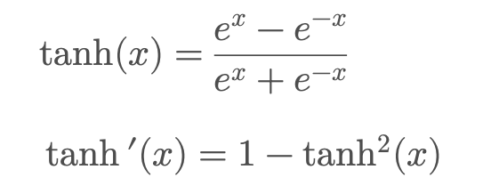
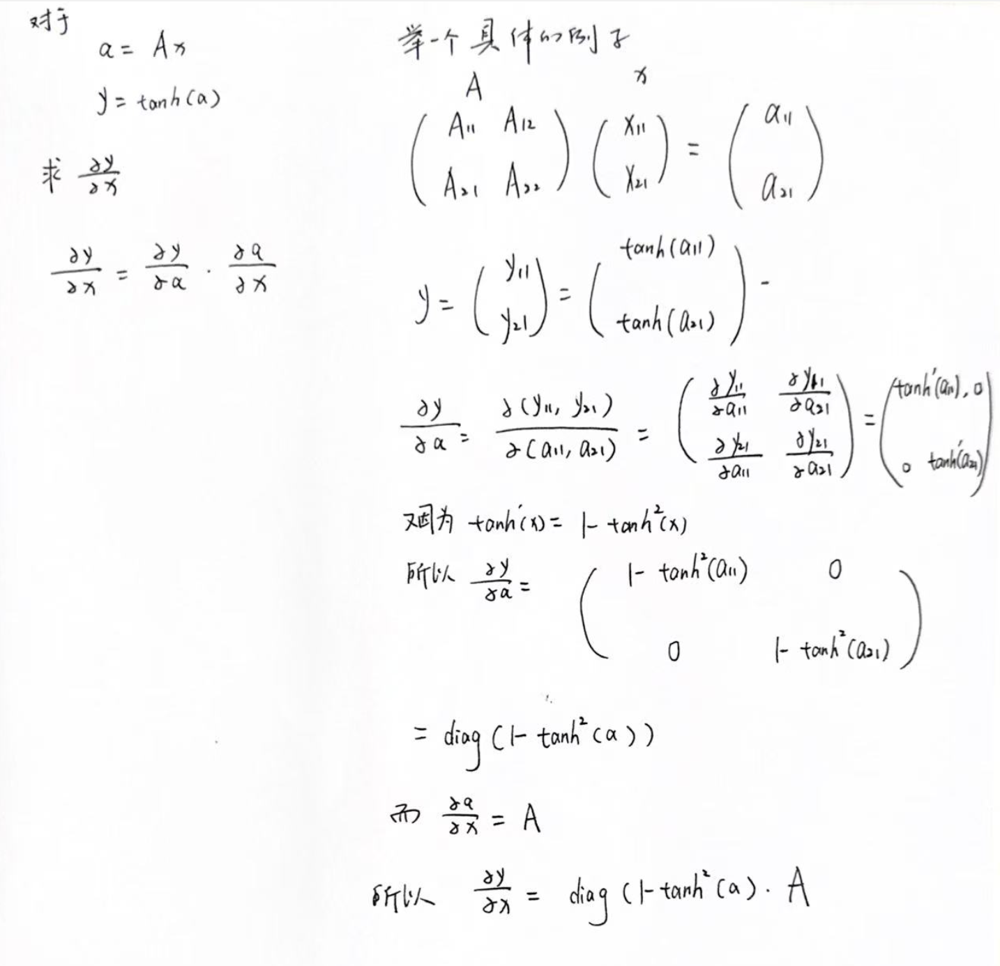
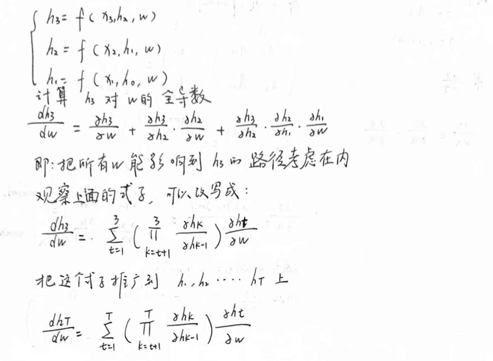
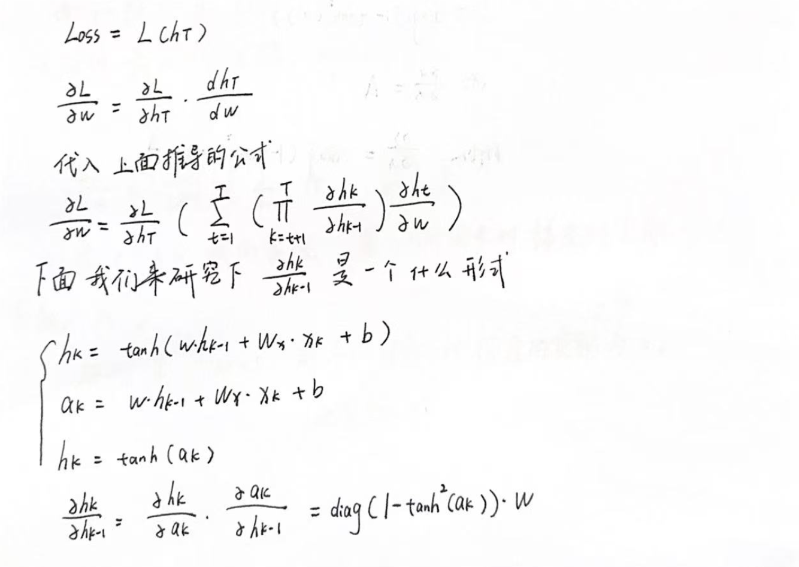
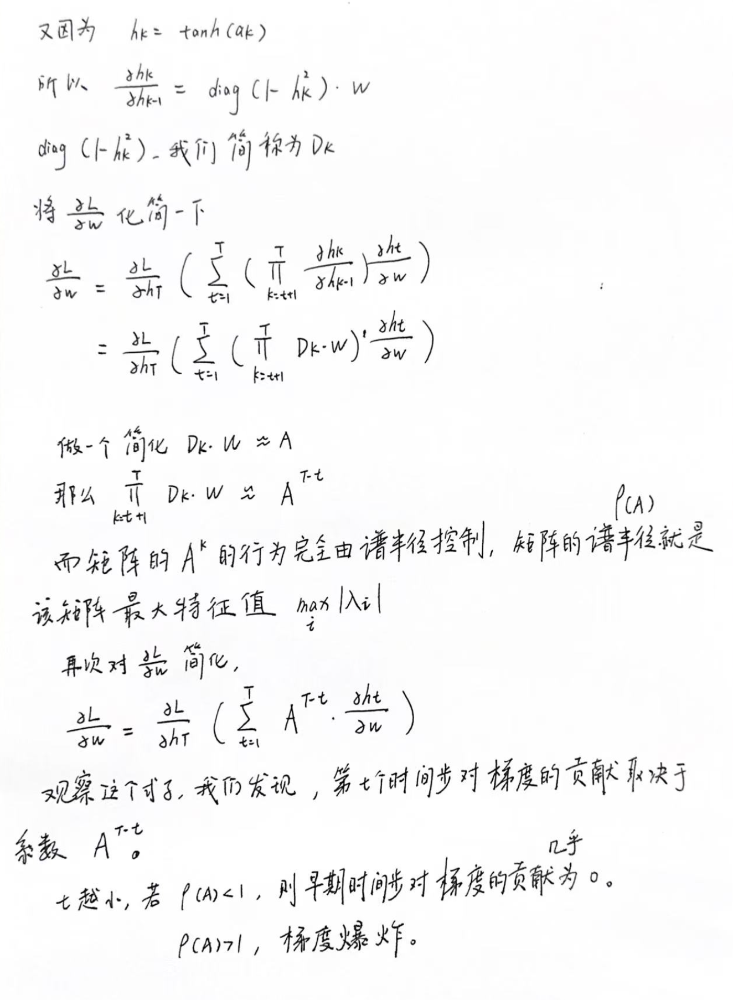

RNN梯度消失和梯度爆炸的解析
Introduction
据说哈，RNN 很容易出现梯度消失和梯度爆炸。那这两个问题到底是怎么发生的呢？这篇 blog 会带你一步一步拆开 RNN 的梯度传播过程，仔细看看为什么梯度会越来越小，甚至接近 0；又为什么有时候梯度会越来越大，最后直接爆炸。
Background knowledge
Introduction of tanh(x)

Matrix differentiation with activation functions
对于没接触过矩阵求导的同学来说，矩阵求导可能比较陌生，其实也没有什么难的，写成雅各布求导大家就明白了。
还有一点就是带上激活函数之后的矩阵求导该咋求呢。
激活函数都是 element-wise 的处理，啥是element-wise呢？
举个例子：
x = (x1, x2)
y = (tanh(x1), tanh(x2))
就是单独处理每一个元素。
了解了上面这些，下面我就手写演示一下。

Mathematical derivation
既然要研究梯度消失和梯度爆炸，那么首先就要计算损失函数（Loss）对于模型参数的梯度。为了便于分析，我们先考虑一个简化的场景——股票价格预测。假设模型的输入是过去一段时间内每个时间点的股票价格 x_t。这些输入依次进入 RNN，经过隐藏状态（Hidden State）的不断传递，最终得到最后一个时间步的隐藏状态 h_T。随后利用 h_T 进行预测，得到未来某个时间点的股票价格，并计算预测值与真实值之间的损失。
因此，在这个简化场景下，我们可以将损失函数表示为：
Loss = L(h_t,weight)
刚开始先不着急，让我们先从从 t=3 开始,推导隐藏状态h3对于参数w的全导数，然后推广到 t=T。

看懂上面这个推导，我们下面来计算损失函数对于 w 的偏导数。


最后再说一句：第 t 个时间步对于梯度的贡献取决于前面的那个连乘的系数，越早期的时间步对梯度的贡献容易过小或过大（取决于矩阵的谱半径），想象一下极端的情况就是：1.早期的时间步对梯度的贡献为 0，根本不会参与到参数更新的过程中。2.早期的时间步对梯度的贡献过大，参数更新的过程中出现 NaN、Inf,导致训练崩溃。
Last
在推导过程中，我们发现引起梯度消失和梯度爆炸的一个关键的原因是有一个连乘。
那么如果让我们想一个办法去改良 RNN 中的这个梯度爆炸的现象我们该怎么办呢？
我觉得我们应该首先想到的是把这个连乘给拿掉，或者换成可以学习的参数。
那在下一个 blog 中，我将会介绍一下 LSTM 是如何缓解梯度消失和梯度爆炸。敬请期待！
Comment
我现在就在想，如果要把所有的历史信息放到一个隐藏状态里，那肯定会涉及到遗忘。所以即使 LSTM 有做了一些改善，加了一个 cell state之类的状态，那其实还是想把所有的历史状态放到一起。
为什么早期没人能想到去记录每一个时间步的隐藏状态呢？再加一个注意力机制？可能是硬件不支持吗？哈哈哈
“上面这段话跟梯度没有任何关系，瞎想的”